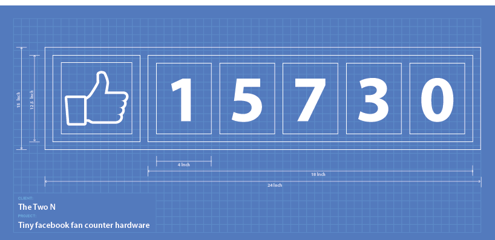
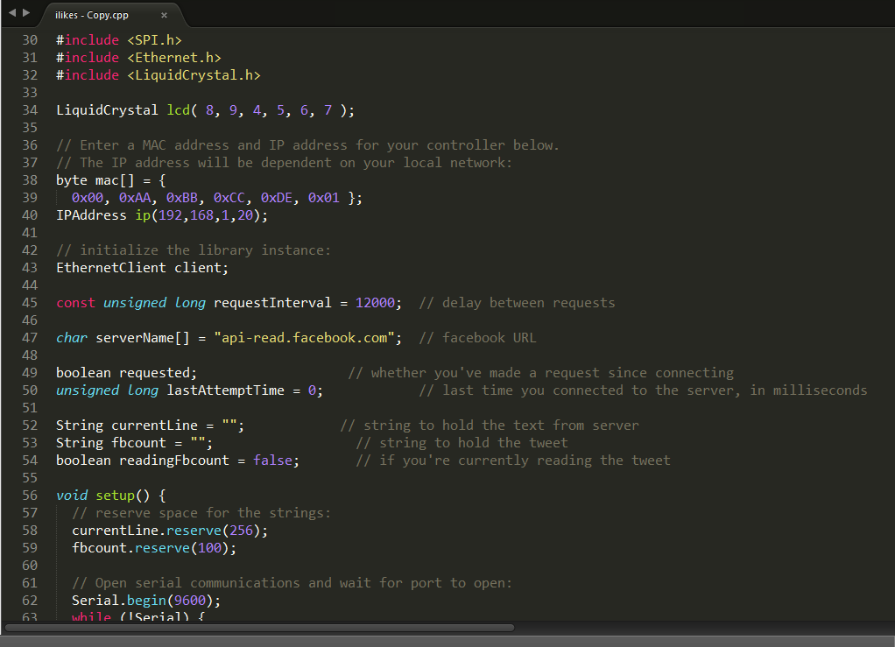
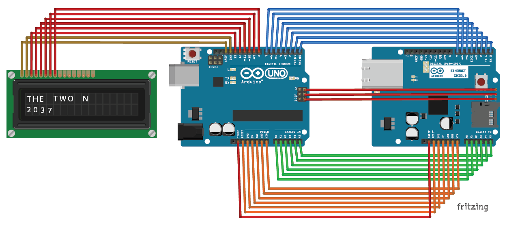

Ardunio based tiny Facebook Fan counter
What is LiveLikes?
Livelikes is a tiny device which display Your Facebook Fan page count in cool wooden mounted LED display.
Initial Blue-print Design
Coding
Cpp program (.INO file) which can fetch Facebook like from the page id. Its live, It will refresh on every 800 Milisecond
Visualizing and Testing
As the below PCB circuit diagram, I have connected the UNO, Ethernet shield and LCD shield to Internet via ASDL router.
Prototype
As shown below video, I have made a prototype of LiveLikes that displays Facebook's own Facebook page likes and updates on every 0.5 second.
Fork and make your own!
Fork LiveLikes on GitHub